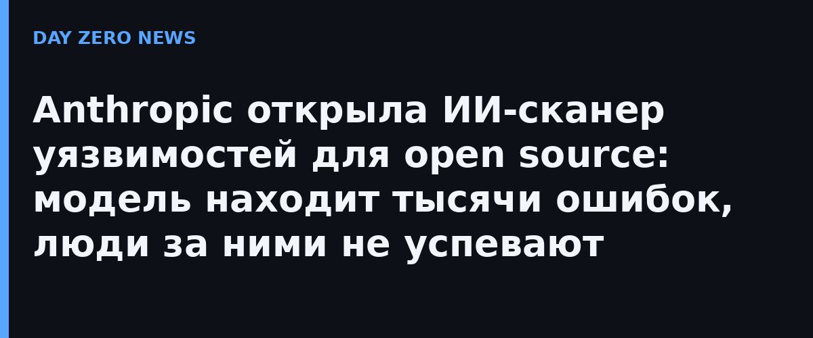

8 октября 2026 года Anthropic объявила о запуске OSS Scanner — сервиса, который будет бесплатно и регулярно сканировать код открытых проектов на уязвимости силами самых мощных моделей компании, включая Claude Mythos. Вход платным не сделан: чтобы подключиться, core-мейнтейнеру нужно отправить pull request в репозиторий anthropics/oss-scanner на GitHub. Отбор проектов устроен по образцу Google OSS-Fuzz — в приоритете библиотеки и подсистемы, от которых зависят критичная инфраструктура и безопасность пользователей.
За последние полгода Anthropic сканировала своими моделями важнейшее мировое ПО и нашла более 29 000 кандидатов в уязвимости. Проверить людьми успели только около 6000 — именно человеческая разборка стала узким местом. При этом почти 5000 непроверенных отчётов компания уже разослала напрямую мейнтейнерам, которые сами попросили «всё как есть»: эксплойты сейчас строятся за минуты, и проект, находящий дыры быстрее, выигрывает гонку с атакующими. Для таких команд OSS Scanner работает «быстрым треком» к классическому процессу координированного раскрытия.
Важная честность анонса: выводы OSS Scanner генерируются моделью полностью, без ручной валидации и оценки тяжести, поэтому ошибочные отчёты возможны. Цену ошибок Anthropic привела сама: при проверке ранней версии сканера независимые пентестеры разобрали 97 критических и опасных находок в 48 проектах — 85 из них (88%) прошли бы в официальный процесс раскрытия, ещё 11 оказались реальными, но уже известными или дублирующими, и лишь одна — чистым ложным срабатыванием. Каждое сообщение приходит с воспроизводителем, объяснением и кандидатом патча.
Обратная связь с пилотных проектов публикация приводит прямо: в PostgreSQL отметили находки с почти готовыми фиксами, в OpenSSL сказали, что «сырой» вывод модели оказался не хуже, а местами лучше человеческих репортов, а wolfSSL из 74 отчётов забраковал только два, и пять находок стали CVE. Один из пилотных пакетов включал цепочки уязвимостей, ведущие к удалённому выполнению кода без аутентификации.
Anthropic подводит черту под общий тренд: на академическом бенчмарке CyberGym языковые модели выросли с менее 20% найденных уязвимостей в начале прошлого года до более 85% в этом. OSS Scanner — часть кибернаправления компании, которое та разворачивает параллельно с программой защиты критичной инфраструктуры. Наш канал следит за этой линией: недели не прошло, как мы разбирали, как ИИ-агент сам взломал организацию безопасности, а открытый ARTEX гоняет автопентест на Claude и DeepSeek. Теперь ИИ-аудит становится штатной инфраструктурой — вопрос лишь, кто успеет закрывать находки быстрее атакующих.